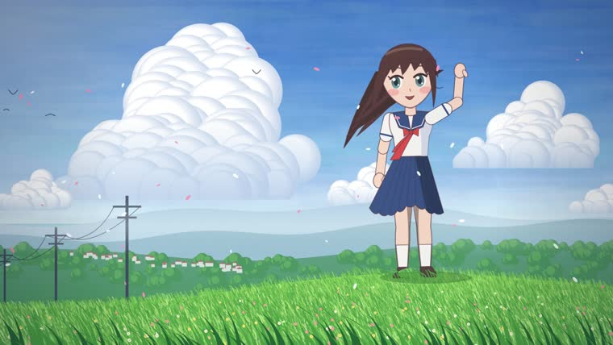
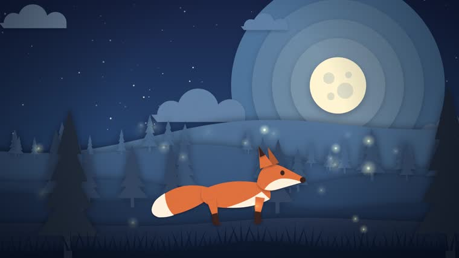

¿Te cansaste de pedir solo una ropa nueva y recibir otro personaje? En este kit gratis, Claude escribe un dibujante en código (es lo que el kit llama motor), que sabe dibujar un estilo, y una ficha corta de la escena: quién aparece, dónde, a qué hora y qué hace. Para una película nueva, cambias la ficha y el dibujante se queda, por eso el rostro no cambia. Sirve para quien quiere hacer una película animada sin saber programar. Puedes empezar en el sitio de Claude, sin instalar nada, o en Claude Code (o en Codex), en una computadora común, sin tarjeta gráfica.
De la suerte a una receta repetible
Un generador de video inventa todo de nuevo en cada intento. Aquí, quien dibuja es un programa que tú aprobaste, y dibuja siempre de la misma manera.
😩 Con un generador de video
- Cada intento es un sorteo: pides lo mismo y sale diferente.
- El rostro del personaje cambia de una toma a otra.
- El clip es corto, y cada intento nuevo gasta crédito.
😌 Con un motor por estilo
- La misma ficha con el mismo dibujante da el mismo video, cuadro por cuadro.
- Cambias la ropa, el lugar o la hora, y el rostro se mantiene.
- Sin límite de 30 segundos: una película larga son varias películas cortas, unidas después.


La misma Lia, con el mismo rostro: el dibujante es el mismo, solo cambió la ficha. Los dos cuadros salieron de las películas de ejemplo del kit.
🎭 La misma cara en toda la serie
El personaje que aprobaste vuelve igual en cada episodio, porque es el mismo código el que lo dibuja.
✏️ Cambias solo lo que pides
"Más despacio", "luz más cálida": el cambio se aplica a ese punto, y el resto de la película queda como estaba.
💻 Sin tarjeta gráfica
La película se monta en tu computadora, solo con el procesador. Hacer la película no gasta crédito de ningún servicio.
Cómo esto cambia tu día
No necesitas programar para notar la diferencia. Mira tres situaciones comunes de quienes hacen videos animados con IA.
📺 Una serie con personaje fijo
Hoy: en cada episodio, el personaje sale con otra cara y quienes lo ven lo notan.
Con el kit: el dibujante es el mismo en todos. Un episodio nuevo es una ficha nueva.
🏖️ Cambiar solo el escenario
Hoy: pides «ahora en la playa» y aparece otra mujer, otro cabello, otro trazo.
Con el kit: Lia fue de la colina a la playa cambiando solo la ficha, como viste arriba.
🎚️ Ajustar un detalle
Hoy: pedir «más despacio» es un intento nuevo, y todo cambia a la vez.
Con el kit: dices qué quieres cambiar y solo eso cambia.
- Primera conversación · tú eliges el estilo
Claude escribe el dibujante y muestra 3 cuadros sueltos para que los mires antes de la película completa. - Lo apruebas · la película sale en tu computadora
Una película de 10 segundos quedó lista en menos de un minuto en la computadora de prueba. - La semana siguiente · película nueva
Abres otra conversación y pides solo una ficha nueva. El dibujante ya está listo.
Entiéndelo en pocos minutos

Un dibujante y una ficha
Piensa en un dibujante de estudio que solo sabe un estilo, y muy bien. Le entregas una ficha corta y dibuja la escena. Ficha nueva, escena nueva, mismo trazo.
✍️ El dibujante (el motor)
Claude escribe, una vez, un programa que sabe dibujar un estilo: el rostro del personaje, el trazo, los colores, la forma de moverse. Es la parte más grande del trabajo.
📋 La ficha
Un texto corto con lo que cambia de una película a otra: quién, dónde, a qué hora, qué ropa, qué hace. En el ejemplo de Lia, la ficha es unas 70 veces más pequeña que el dibujante.
El sonido también se crea con código, al mismo tiempo que la imagen: los pasos, el viento y la música suenan en el instante en que aparecen.
Las 4 formas de animar
Cada forma es un tipo de dibujante. Elegir la correcta antes de pedirlo es la mitad del trabajo, y la IA te ayuda a elegir.

Formas planas en capas, como papel cortado; el fondo se mueve menos que el frente. La más fácil de conseguir.
El escenario se pinta una vez y el personaje actúa delante. Ideal para un personaje con un rostro que aparece en varias películas.

Un pequeño mundo 3D con luz y sombra, y la cámara paseando por dentro. Ideal para lugares y paseos.

Un dibujo ya hecho cobra vida moviendo solo algunas partes: la ropa en el tendedero, el pelo, la cola del gato.
📚 Recetas de estilo en portugués
El kit incluye 31 recetas con el formato "mismo estilo, tu idea", divididas entre las 4 formas de animar: 12 de recorte de papel, 6 de escenario con fondo pintado, 10 de maqueta con cámara y 3 de títere de tela. Elige el estilo, escribe tu idea en una o dos frases (quién, dónde y qué pasa) y envíala. Solo los 4 estilos de arriba ya tienen un dibujante listo y probado; los demás son recetas para que pidas el tuyo.
Lo que el método no promete
🚫 No sale bien
- Personas reales o aspecto de filmación: el código dibuja formas, no piel ni tela de verdad.
- Rostro de actor o rostro humano realista. Los rostros estilizados, con ojos grandes y pocas líneas, funcionan.
- Peleas, baile o deporte: hay que enseñarle cada pose al dibujante.
- Boca sincronizada con el habla.
🔀 El camino híbrido
Cuando quieres un acabado de filmación, la película hecha con código se convierte en el plano: decide la cámara, el tiempo y el personaje, y un generador de video añade la textura encima.
Consigues un mejor acabado y pierdes la garantía de que salga igual cada vez. El generador es de pago, y el kit solo explica este camino: aquí no se ha probado.
💰 Dónde está el costo
Hacer la película en tu computadora no gasta créditos. El costo real es la conversación con Claude, y depende de tu plan. Para gastar menos:
- Reutiliza el dibujante: crearlo es caro, cambiar la ficha es barato.
- Abre una conversación nueva para cada película.
- Pide menos rondas de revisión cuando el estilo es sencillo.
- Revisa con un borrador pequeño y empieza con películas de 5 a 10 segundos.
Pídele a tu IA que analice el kit
No necesitas instalar nada a mano ni entender los archivos. La propia IA lee el kit, escucha tu idea y te dice qué se puede hacer.
0. Elige por dónde empezar
🌐 Sin terminal, en el sitio de Claude
- En el sitio o en la aplicación de Claude, abre Configuración y activa la creación de archivos y la ejecución de código.
- Abre una conversación nueva.
- En la página de recetas del kit, copia una receta de estilo y el bloque de reglas que está en esa misma página. Cambia [SUA IDEIA AQUI] por tu idea.
- Pega todo en la conversación y descarga el MP4 que te entregue Claude.
💻 Con Claude Code o Codex
Claude Code es Claude trabajando en una carpeta de tu computadora: lee, crea y ejecuta los archivos del kit ahí mismo. Necesitas un plan pago de Claude y puedes descargarlo en claude.com/claude-code. Codex es el equivalente de OpenAI. Si eliges esta opción, sigue los pasos 1 a 3 de abajo.
1. Abre tu IA
Claude Code o Codex, abierto en una carpeta de tu computadora.
2. Pega el pedido de abajo
Cambia la parte entre corchetes por tu personaje. La IA lee el kit y te explica en español sencillo, sin cambiar nada todavía.
3. Di que sí a lo que tenga sentido
Te muestra el plan. Lo apruebas, prepara el kit y te muestra los primeros cuadros.
Lee el kit "filme-em-codigo" en https://github.com/linnoff88-dev/filme-em-codigo (la página de instrucciones técnicas, el README, explica todo, incluida la instalación). Quiero una película animada con este personaje: [describe quién es, dónde está, qué hora es y qué hace]. Antes de hacer cualquier cosa, respóndeme en español sencillo: 1. ¿Cuál de las 4 formas de animar combina con mi idea y por qué? 2. ¿Qué necesita tener mi computadora para hacer la película? 3. ¿Qué no podrá hacer el método con mi idea? Todavía no instales ni crees nada. Muéstrame el plan y espera a que te diga que sí.
🛠️ ¿Técnico y prefieres instalar a mano?
Los pasos con los comandos, lo que necesitas tener instalado y las pruebas están en la página de instrucciones técnicas del kit, en GitHub (el sitio donde se guarda el kit).
Medimos de verdad, sin tarjeta gráfica
Las cuatro películas de ejemplo del kit se hicieron en esta computadora y se midieron una por una: 10 segundos de película cada una, en la calidad de YouTube (1080p).
recorte de papel
estilo anime, escenario pintado
maqueta 3D
marioneta

Medido el 19/11/2026 en una computadora sin tarjeta gráfica: cada película usó en promedio unos 3 núcleos del procesador (la escena 3D necesita más, casi 11). Las cuatro películas estuvieron listas en entre 25 y 45 segundos cada una. En una computadora más sencilla tarda más, y «misma película, mismos cuadros» se comprobó en la misma computadora y en el mismo navegador.
Las herramientas abiertas que hay detrás
El kit se apoya en herramientas gratuitas y abiertas, creadas por comunidades. Dos de ellas trabajan dentro del kit; las demás siguen la misma idea y sirven para ir más allá.
🧊 three.js
Dibuja mundos 3D dentro del navegador. Es la que arma la maqueta de la cabaña en la nieve.
🎞️ FFmpeg
Une los cuadros y el sonido en un archivo de video. Es el último paso de cada película del kit.
⚛️ Remotion
Crea videos escribiendo páginas de internet: cada cuadro se calcula según su número, como en el kit.
📐 Manim
Anima formas y cálculos con precisión; nació para hacer videos de matemáticas. Esta es la versión mantenida por la comunidad.
✏️ rough.js
Le da al dibujo un trazo que parece hecho a mano, con garabatos y rayado. Combina con el recorte de papel.
🎬 HyperFrames
Convierte una página de internet en video, con línea de tiempo y edición listas. Sirve como alternativa a la edición del kit.
Ver las 26 referencias, con una explicación de cada una y su licencia de uso.
Para ir más allá
Otros kits gratis de ARCKHÉ AI que hacen video con código.
🎙️ video-codigo
Video hecho con código y narración en voz local, con la imagen ligada a la palabra hablada.
⏱️ sincronia-em-codigo
Imagen, contador y sonido avanzan juntos en el mismo reloj, y series enteras a partir de una hoja de cálculo.
🎨 estilo-em-skill
El estilo de un video que te gustó se convierte en una receta que la IA reutiliza.
Antes de que empieces
¿Necesito saber programar?
No. Describes al personaje y la escena, miras los cuadros que muestra la IA y dices qué cambiar. Claude escribe el código.
¿Necesito una tarjeta gráfica?
No. Los ejemplos se hicieron solo con el procesador. El 3D es lo más lento y, aun así, la película de 10 segundos salió en menos de un minuto en el ordenador de prueba.
¿Cuánto cuesta?
El kit y esta guía son gratis. Hacer la película en tu ordenador no consume créditos. Lo que cuesta es la conversación con la IA que ya usas, y eso depende de tu plan.
¿La película puede ser larga?
Sí. La forma que funciona es hacer varias películas cortas con el mismo dibujante y unirlas después. Pedir una película larga de una vez encarece la conversación y la IA pierde el hilo.
¿Puedo usar un dibujo mío?
Sí, de dos maneras. El pedido «con tu referencia» hace que Claude estudie tu imagen y la redibuje en código, con las partes listas para moverse. El método del «muñeco de trapo» usa un dibujo cuyas partes (brazo, pelo, ropa) ya están separadas; una foto o un JPG común no bastan, y Claude separa las partes cuando se lo pides.
¿Sirve para personas reales?
No. El método funciona muy bien con estilos: papel, anime, maqueta, marioneta. Para que parezca una filmación, usa el camino híbrido, con la película del código como plano.
¿Funciona con Codex?
El kit se diseñó para Claude Code, pero Codex también puede leerlo y decirte si sirve para tu idea.
¿Funciona en mi ordenador?
Se midió en una sola computadora, sin tarjeta gráfica. En una computadora más sencilla, la película tarda más. No se probó en Windows ni en Mac; la IA revisa lo que necesitas durante el análisis.
Y tú: ¿qué personaje pondrías en una serie entera con la misma apariencia? El kit es gratis en ARCKHÉ AI, directamente en internet.